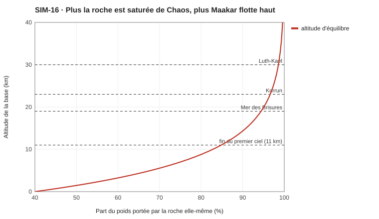
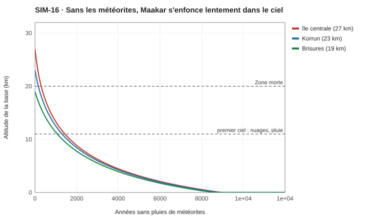
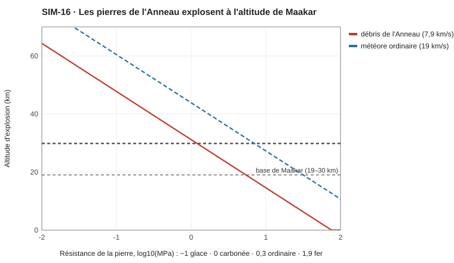

SIM-16 — Maakar flottant : lévitation, chute, météorites
Code : sim16_maakar.py (Python pur, python -I sim16_maakar.py). Fiche du monde : PLA-009 Maakar, l'archipel et ses îles flottantes.
1. La lévitation
Modèle (hypothèse de « l'aimant cassé ») :
- la roche saturée de Chaos orienté porte elle-même une fraction s de son poids (PHY-002 Le Chaos et les forces) ;
- la Racine, au fond de la mer, repousse l'archipel avec une force qui décroît avec la distance : f₀ · exp(−h / L), avec f₀ = 0,6 et L = 8 km ;
- l'équilibre donne h = L · ln(f₀ / (1 − s)).

| Région | Altitude | Poids porté par la roche | Poids porté par la Racine |
|---|---|---|---|
| Mer des Brisures | 19 km | 94,4 % | 5,6 % |
| Korrun | 23 km | 96,6 % | 3,4 % |
| Île centrale | 27 km | 98,0 % | 2,0 % |
| Luth-Kael | 30 km | 98,6 % | 1,4 % |
Lecture
- La hauteur dépend de la saturation. Quelques pour cent de saturation font une dizaine de kilomètres d'altitude. Luth-Kael, le plus bombardé, est le plus haut.
- L'équilibre est stable. Si l'archipel descend d'un kilomètre, la Racine pousse de 0,33 % du poids en plus et le remonte.
- Le continent « respire ». Poussé par un gros impact, Maakar oscille autour de son équilibre, avec une période d'environ 18 minutes, amortie par l'air. Ce sont les séismes de Maakar : un continent entier qui monte et descend de quelques mètres.
2. Si les pluies de météorites s'arrêtaient
L'orientation du Chaos se perd lentement par agitation (PHY-000 Définition physique du Chaos §4). On a pris une durée de vie τ = 10 000 ans, à valider.

| Années sans pluies | Altitude de Korrun |
|---|---|
| 0 | 23 km |
| 10 | 22,8 km |
| 100 | 21 km |
| 500 | 16 km |
| ≈ 1 300 | 11 km : il entre dans le premier ciel |
| ≈ 8 800 | il touche la mer |
Maakar vit sous perfusion de météorites. Une décennie de pluies faibles se voit (environ 200 m de descente) ; un siècle se voit beaucoup (2 km).
L'Anneau est fait des débris de la Lune Sœur : ≈ 75 % de glace, 20 % de roche, 5 % de fer. Relancé avec cette composition, le tri donne pour Maakar 88 % de glace, 7 % de pierres carbonées, 5 % de pierres ordinaires (au lieu de 59 / 24 / 17 ci-dessous). Le mécanisme de la pluie : PLA-010 L'Anneau, la Lune Sœur et les Éclats.
3. Le tri des météorites
Règle du vault (CHI-004 Les métaux et le Chaos) : un matériau retient d'autant mieux le Chaos que ses noyaux sont loin du « pic du fer ». L'hydrogène, le carbone et l'oxygène le retiennent très bien ; le fer et le nickel ne le retiennent pas du tout.
Composition de l'Anneau (proposition, qui dépend de son origine) : 40 % de glace, 22 % de pierres carbonées, 30 % de pierres ordinaires, 2 % de fer-pierre, 6 % de fer.
| Type | Perméabilité au Chaos | Capturé par le champ | Part des chutes sur Maakar | Part des chutes ailleurs dans la bande |
|---|---|---|---|---|
| Glace de l'Anneau | 1,69 | 95 % | 59 % | 6 % |
| Chondrite carbonée | 0,67 | 70 % | 24 % | 19 % |
| Chondrite ordinaire | 0,25 | 36 % | 17 % | 54 % |
| Fer-pierre (pallasite) | 0,03 | 4 % | 0 % | 5 % |
| Fer (fer-nickel) | 0 | 0 % | 0 % | 17 % |
Sur Terre, environ 95 % des chutes observées sont des pierres, dont la grande majorité sont des chondrites ordinaires. Les chondrites carbonées représentent environ 4 à 8 % des chutes, et les fers environ 2 à 5 %. Une chondrite carbonée comme Murchison (Australie, 1969) contient environ 10 % d'eau, 2 % de carbone et plus de 70 acides aminés.
4. Où elles explosent
Une pierre éclate quand la pression de l'air qui la freine (ρ v²) dépasse sa résistance. Les débris de l'Anneau tombent depuis une orbite basse : ils entrent lentement, à ≈ 7,9 km/s, contre 11 à 72 km/s pour les météores ordinaires.

| Type | Résistance avant l'entrée | Explose vers |
|---|---|---|
| Glace | ≈ 0,03 MPa | 56 km : elle se disperse bien au-dessus de Maakar et retombe en neige fine |
| Chondrite carbonée | ≈ 0,5 MPa | 36 km : juste au-dessus de Maakar, elle le saupoudre de poussière noire |
| Chondrite ordinaire | ≈ 2 MPa | 26 km : à l'altitude même de Maakar |
| Fer-pierre | ≈ 20 MPa | ≈ 10 km |
| Fer | ≈ 80 MPa | atteint le sol entier |
La bulle d'air de Maakar est un piège. L'air y est environ 25 fois plus dense qu'en air libre à la même altitude. Une pierre qui y entre voit la pression bondir à ≈ 59 MPa : presque tout ce qui a survécu jusque-là éclate au plafond du second ciel, au-dessus des villes.
Les météoroïdes sont bien plus fragiles que les météorites qu'on ramasse : environ 0,1 à 1 MPa pour leur première rupture, contre souvent 30 MPa ou plus pour les fragments retrouvés (Popova et al., 2011). Tcheliabinsk s'est d'abord fracturé vers 45 km, puis a culminé à 29,7 km, avec une énergie d'environ 590 kt (≈ 20 m de diamètre, 18,6 km/s).
5. Fréquence et énergie
environ une pierre de plus d'un mètre par pluie, soit 30 par an. La répartition des tailles est une loi réelle des petits corps, N(> D) ∝ D^−2,7.
| Taille | Fréquence sur Maakar | Énergie (à 7,9 km/s) | Ce que ça fait |
|---|---|---|---|
| 1 m | 30 par an | ≈ 9 t de TNT | Une détonation, des vitres brisées |
| 5 m | une tous les 3 ans | ≈ 1 kt | Un quartier soufflé |
| 10 m | une tous les 17 ans | ≈ 9 kt | Une ville touchée |
| 20 m | une par siècle | ≈ 70 kt | Une région ravagée |
| 50 m | une tous les ≈ 1 300 ans | ≈ 1 Mt | Un cratère : Luth-Kael en est la trace (en plus gros) |
La lenteur des débris est une chance : une pierre de l'Anneau a 5 à 6 fois moins d'énergie qu'un météore ordinaire de même taille.
Limites
- Les paramètres L, f₀ et τ sont choisis pour retrouver les altitudes de PLA-009. Ils ne sont pas dérivés.
- La composition de l'Anneau dépend de son origine, que l'auteur doit trancher. Un Anneau surtout glacé donnerait plus d'eau et moins de catastrophes.
- La capture par le champ est une loi simple, en exponentielle de la perméabilité.
Sources
- Pluie d'anneau de Saturne (Cassini, 2017–2018) : Scientific American, Space.com.
- Tcheliabinsk : ESA ; Popova et al., Science, 2013.
- Statistiques des chutes : Wikipedia, Meteorite fall statistics, ASU.
- Résistance des météoroïdes : arXiv 1903.06572, arXiv 2601.14371.
- Murchison : Wikipedia, National Academies.
- Lévitation diamagnétique : Berry et Geim, Of flying frogs and levitrons, Eur. J. Phys., 1997 (PDF).
- Fréquence des petits impacteurs : Brown et al., Nature, 2002 ; arXiv 1802.07299.